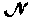
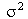
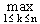
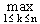

Verovatnoca i statistika
jun '95.
.
1. Kocka za igru baca se 6 puta. Odrediti verovatnocu dogadjaja da ce 6-ica pasti veci broj puta u prva 3 bacanja nego u poslednja tri bacanja.
2. Slucajna velicina X ima (m,) raspodelu. Odrediti gustinu raspodele slucajne velicinei izracunati njeno matematicko ocekivanje i disperziju.
3. Dat je niz (Xn) nezavisnih slucajnih velicina cije su raspodele odredjene jednakostima:
P {Xn = - }=
P {Xn =
}=
P {Xn =  }=
½, ..... n = 1, 2, ...
}=
½, ..... n = 1, 2, ...
Da li za niz (Xn) vazi zakon velikih brojeva?
4. Obelezje X ima gustinu raspodele:
j(x) = gde je l >0.
gde je l >0.
Na osnovu uzorka (X1, X2, ..., Xn) odrediti ocenu maksimalne verodostojnosti nepoznatog parametra l. Ispitati postojanost te ocene pri n ® ¥.
5. Dat je uzorak iz (m, )
raspodele:
)
raspodele:
204, 201, 210, 212, 209, 213, 219, 214, 213, 221,
211, 217, 214, 213, 200, 213, 212, 216, 228, 215,
216, 218, 214, 214, 212, 218, 213, 212, 215, 215.
Odrediti dvostrani interval poverenja za nepoznatu disperziju .
.
6. Neka je (X1, X2, ..., Xn)
uzorak iz  [q,
2q] raspodele i X(n) = Xk.
Odrediti konstantu cn tako da je cnX(n)
centrirana ocena parametra q.
[q,
2q] raspodele i X(n) = Xk.
Odrediti konstantu cn tako da je cnX(n)
centrirana ocena parametra q.